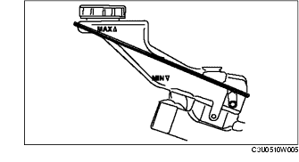
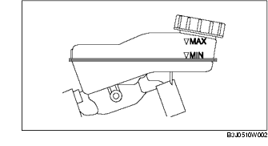

HYDRAULIKFLÜSSIGKEIT PRÜFEN
B3E051016010W01
Hinweis
• Für die Kupplungs- und Bremsflüssigkeit wird ein gemeinsamer Behälter verwendet.
• Prüfen, ob der Flüssigkeitsstand beim Wechseln zwischen MIN und MAX liegt.
LHD

RHD
